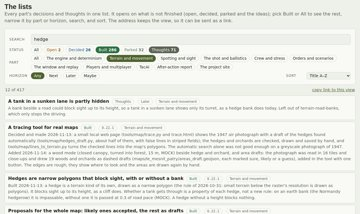

tankzim2000 The project site
Built 2
Version 0.31.2 1
Filter and sort the lists, so a friend finds the ideas and decisionsBuilt0.31.2
The main page has one list of every part's decisions and thoughts under one filter bar: search, status (with counts, several at once), part, horizon and a sort (by status, newest built first, title, part). It opens on what is not finished; the choice is kept in the address, so a view can be sent as a link. The part pages' search now covers the thoughts too and hides the headings with nothing under them. Plain script on the pages the site already builds; the part about the site itself is public now. A link at the top of the main page, "Find an idea or decision", jumps to the list, which lies under the part cards.
Question: How should a friend find the ideas and decisions on the site?
Options
✓A filter bar in plain script on the pages already built
The rows carry their status, part, horizon and version as attributes; a small script filters, sorts and keeps the choice in the address.
Why: Chosen: filtering and sorting need no site generator, and the pages keep their look, their tags and the checks of the build.
A static site generator (Hugo or the like)
The pages rebuilt from the items by a generator's templates.
Why: Not chosen: everything the build does (the checks, keeping private items off the public site, the pictures, the quotes) would have to be built again in its templates, a new tool chain for no new function.
Facts
| DESIGN_CHOICE | A static site generator was weighed and not chosen: the checks of the build, the rule that a private item never reaches the public site, the pictures and the quotes all live in the build, and a generator would need them again. | tools/site/build.py: render_filter_bar |
| observed | The public page holds only what it held before: the rows come from the same items the public build lets through, so a private item is never in them. | tools/site/build.py: index_rows |
| observed | Before, the part pages' search walked the thoughts and the model's steps too, which had no search text, and stopped with an error at the first, so the headings never hid; and the graph tab's buttons changed the status filter. | tools/site/build.py: render_thoughts |
| DESIGN_CHOICE | The list opens without the built items, as the built list was folded before; Built or All shows them. | tools/site/build.py: render_rows |
Code
tools/site/build.py: index_rowstools/site/build.py: render_filter_bartools/site/build.py: render_rowstools/site/build.py: version_keytools/site/build.py: render_thoughts
Pictures

Version 0.18.0 1
The picture diary: one picture per recipe and version, never retakenBuilt0.18.0
A recipe (the decision id, a caption and the command line for the program) gives one screenshot per engine version, saved as a JPEG with a thumbnail. A picture that is taken is never taken again, so the folder is the diary and shows how the window changed over time. A picture put in by hand is marked manual and is never replaced by the tool.
Question: How are the pictures in the diary kept over time?
Options
✓One picture per recipe and version, never retaken
The folder is the diary; a wrong picture is fixed by deleting its file by hand.
Why: Chosen: a retake would look different, so the history shows the change itself.
A --force option that retakes a version
A flag that replaces the pictures of a version.
Why: Not chosen: the flag was removed.
Facts
| DESIGN_CHOICE | JPEG at about a third of the PNG's size; a thumbnail 360 px wide. Without Pillow the screenshot stays a PNG and there is no thumbnail. | tools/site/shots.py |
No thoughts yet (data/items/tacai.json).
No model yet (docs/tacai_model.json).
No model yet (docs/tacai_model.json).